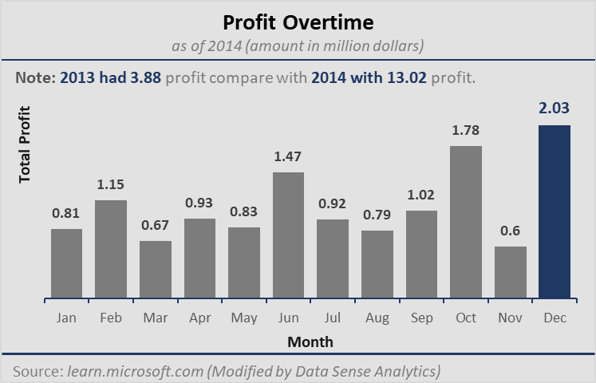

Projects
Case Study: How can a Wellness Technology Company Play It Smart?

VIEW CONTENT
In this case study, Data Analyst performed many real worlds task of a Junior Data Analyst. They Imagined that they are working for Bellabeat, a high-tech manufacturer of health-focus products for women, and meet different charaters and team members. In order to answer business questions, data analyst followed the steps of the data analysis process Ask, Prepare, Process, Analyze, Share, and Act.
Executive Summary: Financial Performance and Strategic Recommendations
VIEW CONTENT
In an ever-evolving business landscape, understanding where your company's financial strengths lie and where to strategically allocate resources is paramount. This executive summary presents a succinct analysis of the key financial and strategic questions, shedding light on the most profitable period, the region of utmost success, and the products and segments that warrant further investment...
Plato's Pizza 2015: A Maven Pizza Challenge - Excel Dashboard

VIEW CONTENT
The data presented in this dashboard provides a comprehensive overview of a specific business's operational performance during the calendar year of 2015. With the duration spanning from January 1 to December 31, encompassing 358 days, the dashboard offers a valuable insight into various facets of the business. From the busiest day and time of operation to the quantity of pizza produced...
Sales Performance Insights: Uncovering Success Patterns - Excel Dashboard

VIEW CONTENT
In the pursuit of success and growth, understanding key performance metrics is vital. This dashboard provides a comprehensive overview of critical insights that can shape a future of the company. Exploring into the best sales periods, regional success, hourly sales trends, and product performance, it equips us with the knowledge needed to make informed decisions that can lead your company to greater success.